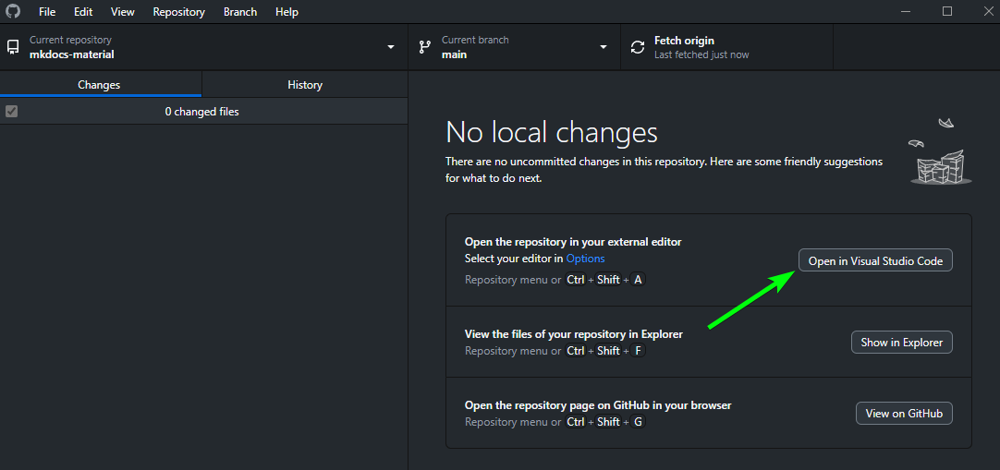

MkDocs¶
For full documentation visit mkdocs.org and Material for MkDocs.
Useful Stuff¶
Edit Website¶
- Open Website in VS CODE
Tip: Open VSCode via GitHub Desktop
I usually access it via GitHub Desktop

-
Preview on http://localhost:8000/ (Just type the following commands in the Terminal in VS Code)
Expected OutputPS X:\OneDrive\Documents\GitHub\mkdocs-material> mkdocs serve # (1)! INFO - Building documentation... INFO - Cleaning site directory INFO - Documentation built in 0.44 seconds INFO - [20:07:01] Watching paths for changes: 'docs', 'mkdocs.yml' INFO - [20:07:01] Serving on http://127.0.0.1:8000/ INFO - [20:07:03] Browser connected: http://localhost:8000/- This Command will run the live preview on http://localhost:8000/ , you can exit it with Ctrl+C
-
If you are happy with it Ctrl+C to exit, and run
-
CommitandPush/Syncto GitHub (usually via VSCode or GitHub Desktop)